Current Focus
大学加载中......loading......
Now
Current Focus
大学加载中......loading......
Career
第一届残疾人EMBRACING公益音乐节组委会成员
鉴图栏目编辑&评委
2026高三毕业典礼视频制作
2025高三毕业典礼视频制作
开学典礼摄影师
青春季记者
运动会摄影师
活动现场志愿者
活动摄影师
S1，S2赛季比赛解说
比赛运营
技术负责人
比赛裁判
直播包装和宣发海报制作
北京高中生足球冠军杯摄影记者
中国(北京)第一届动画周小记者
Education
加载中......
第十九届中国国际大学生动画节小白杨奖 数字媒体类 一等奖
中国传媒大学数字媒体艺术常年作品征集 A
北医附中辩论队体验卡
全国版图知识竞赛 三等奖
第27届全国中小学生绘画书法比赛 三等奖
教进南校微电影社(已倒闭) 副社长
北京市第二十三届学生艺术节海淀赛区管乐初中个人组 二等奖
金帆管乐团长号首席
2018爱丁堡国际青年乐队节 金奖
北京市第二十二届学生艺术节海淀赛区管乐小学金帆组 金奖
北京市第二十一届学生艺术节海淀赛区管乐小学金帆组 金奖
《永远的长征——纪念红军长征胜利80周年文艺晚会》演员
Skills
点击图片可查看大图
广州图书馆五层，黄昏时分，无数人影，从全世界路过
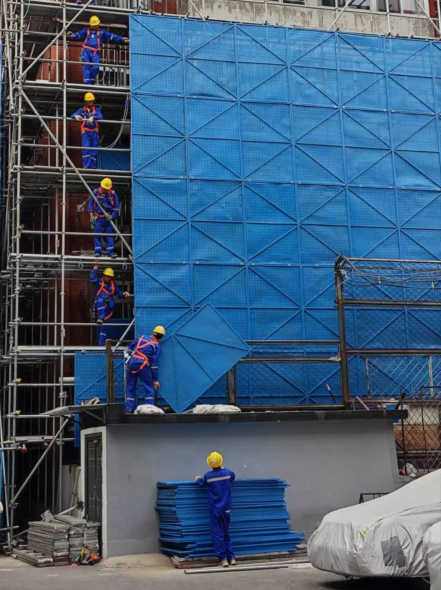
北京市老旧小区改造项目现场，工人们接力完成脚手架安装
三环路边，倒地的陌生人，路过的行人，吃瓜的群众
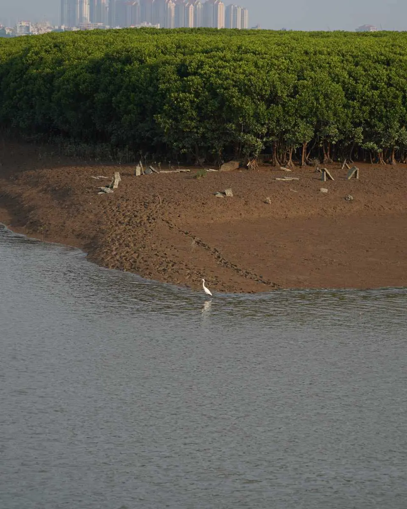
泉州洛阳桥，三角洲红树林和城市连成一线
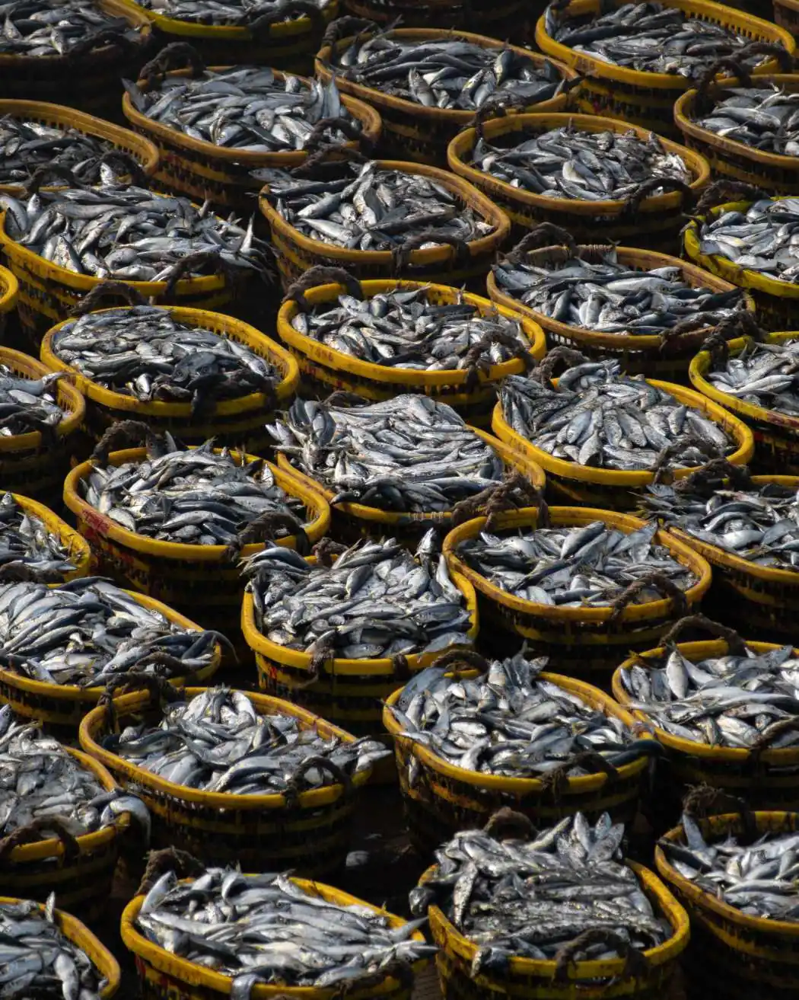
泉州石狮的祥芝码头
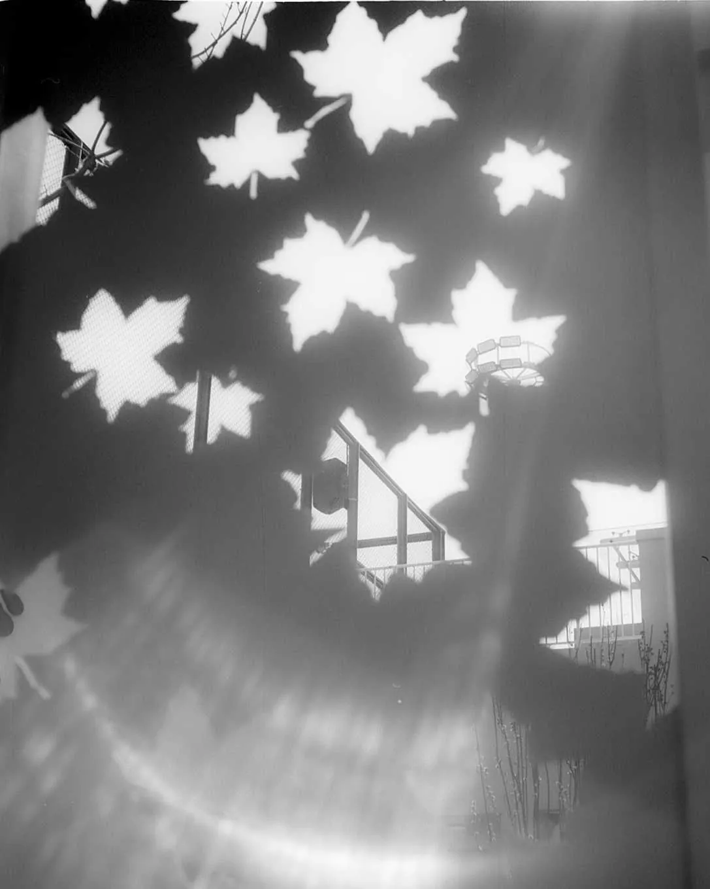
北大附中北医分校健德亭
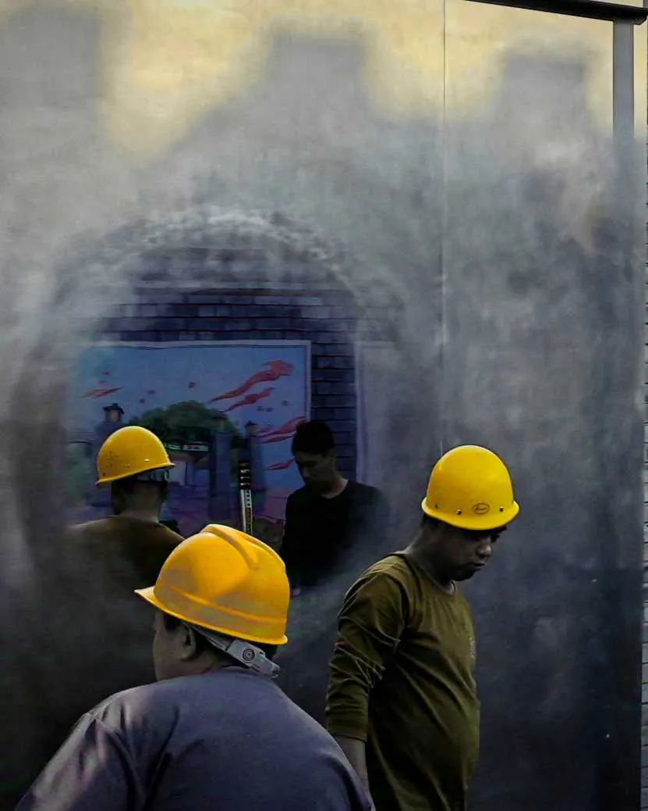
北京白塔寺附近胡同拆迁
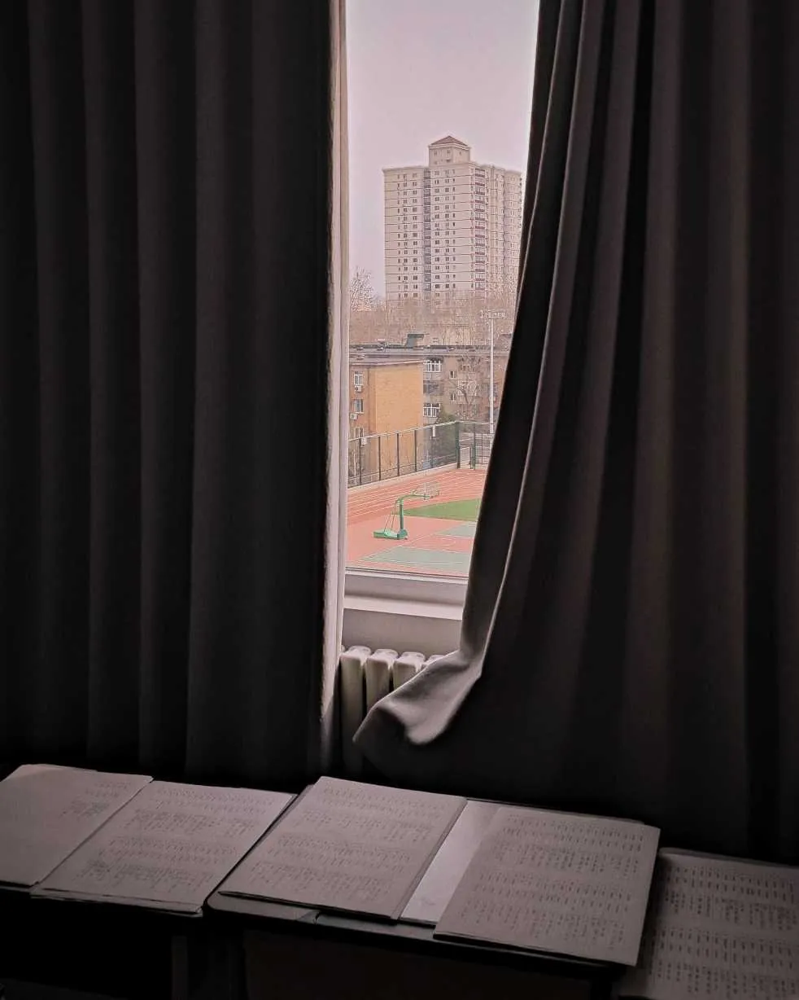
窗外的风景
单击查看项目信息
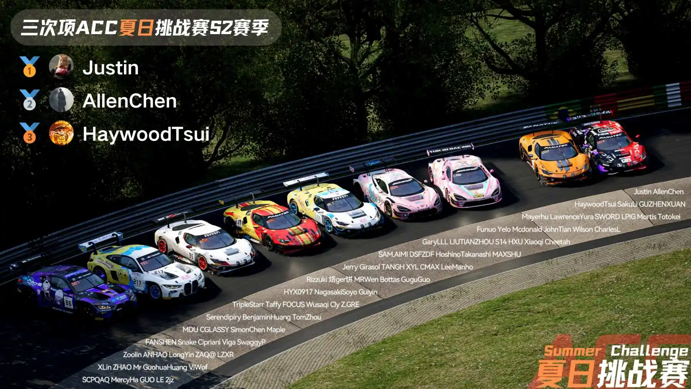
比赛解说&比赛运营&技术负责人
比赛裁判&直播包装和宣发海报制作
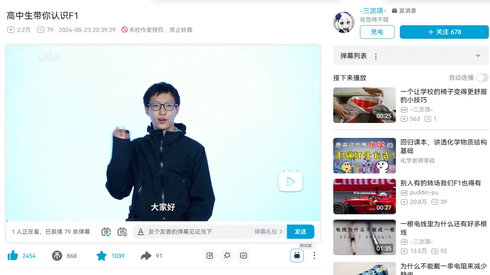
第十九届中国国际大学生动画节小白杨奖 数字媒体类 一等奖
视频作品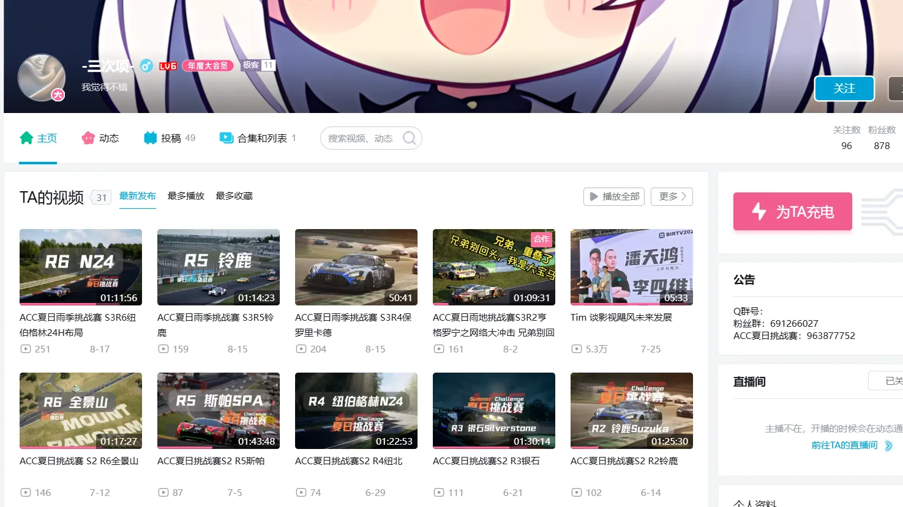
播放量55w+ 点赞1.4w+
账号运营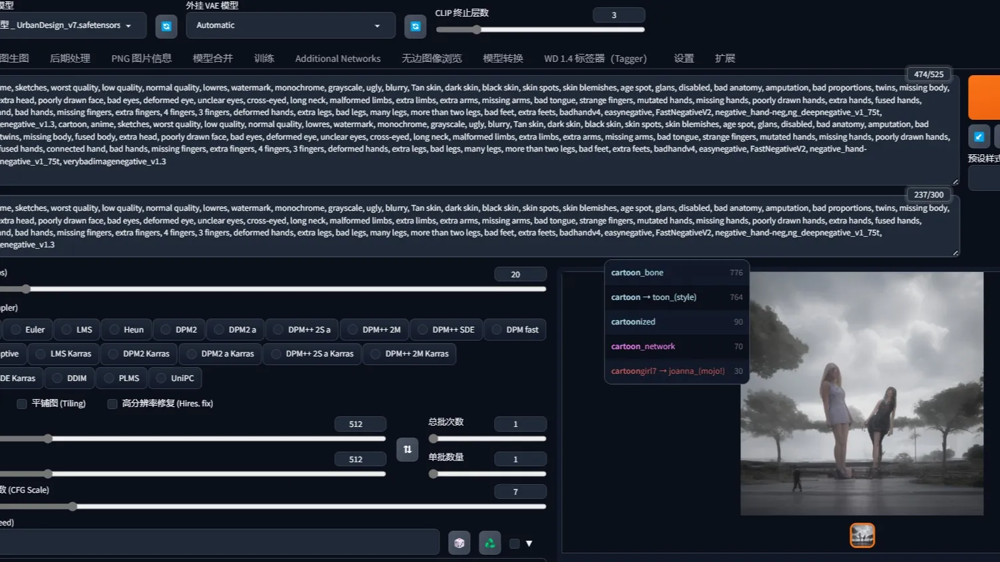
LLM内测&线下展会参与
科技爱好者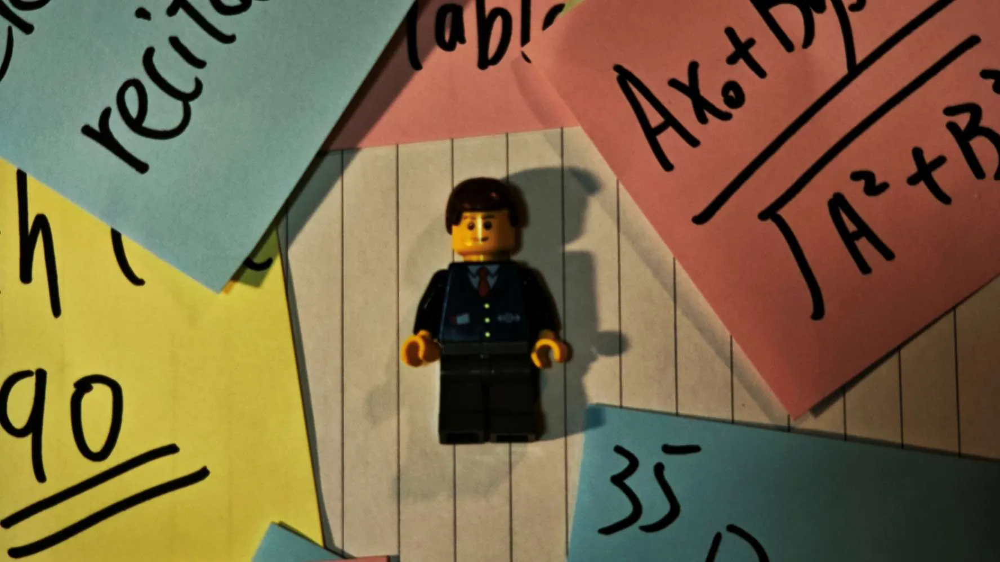
布景&拍摄&后期
视频制作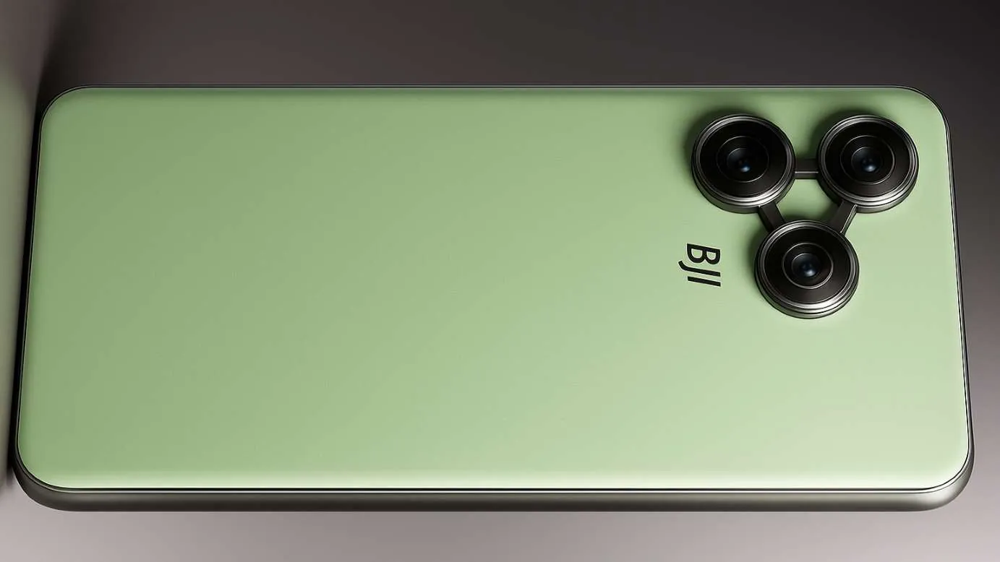
手机&电脑&芯片&3C电子产品......
产品设计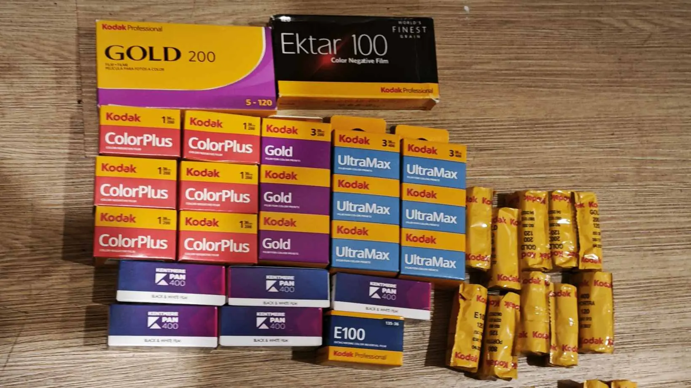
销售额70000+
网店运营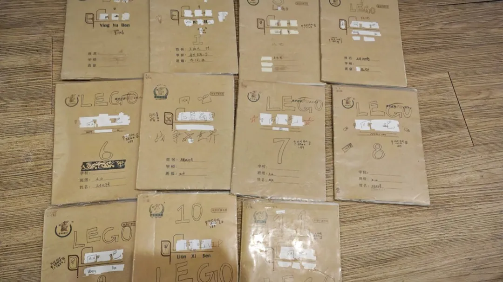
3部ppt闯关+13部游戏本系列
游戏设计Testimonials
他是一个兼具理性与创造力的人，对技术、影像和现实世界始终保持着旺盛的好奇心。 相比追逐潮流，他更喜欢独立观察和深入思考，总能从细微之处发现别人忽略的联系与故事。 无论是探索新兴技术、记录城市瞬间，还是研究复杂的问题，他都习惯亲自实践、不断求证。 在安静的外表下，藏着持续学习的热情和对世界的探索欲，这种独立思考与长期投入的能力，让他逐渐形成了鲜明而独特的个人风格
和他共事最大的感受就是：这人心里有底。他不靠喧哗刷存在感，也不屑用漂亮话糊弄事儿。 但只要你抛出一个棘手的问题，他总能沉进最琐碎的细节里，把它拆解成清晰优雅的解决方案。 他身上有种很迷人的混合气质——对技术保持着近乎偏执的审美，对世界却怀有极温柔的洞察。 偶尔冒出的冷幽默，和他那套自成一派的逻辑，会让人冷不丁笑出来，然后发现他其实比看上去更有趣。 既聪明又诚恳
他是一个思维敏捷且目标导向明确的沟通者。在交流过程中，TA总能直奔主题，高效、清晰地表达自己的核心诉求， 并表现出极强的爽快与果断。他既具备独特的个人风格与蓬勃的活力，又能在理性互动中保持敏锐的洞察力。 与他协作是一件轻松且充满启发的事——他不仅是一位聪慧的探索者，更能在每一次干净利落的互动中，展现出高效、直率且极具潜力的个人魅力。
他是一个安静却有力量的人。做事雷厉风行，不喜空谈，只认结果。对自己的热爱专注到极致，从不含糊妥协。 外表沉稳冷静，内心却藏着对世界的好奇与热忱。他有自己的节奏和标准，不屑于将就，总在用行动默默证明自己。 低调谦逊，却让人无法忽视他的存在。他不追求外界的认可，只求对得起自己心中的那份执着。 和他相处让人感到踏实，因为你知道他说的每一句话都是认真的，做的每一件事都是走心的。